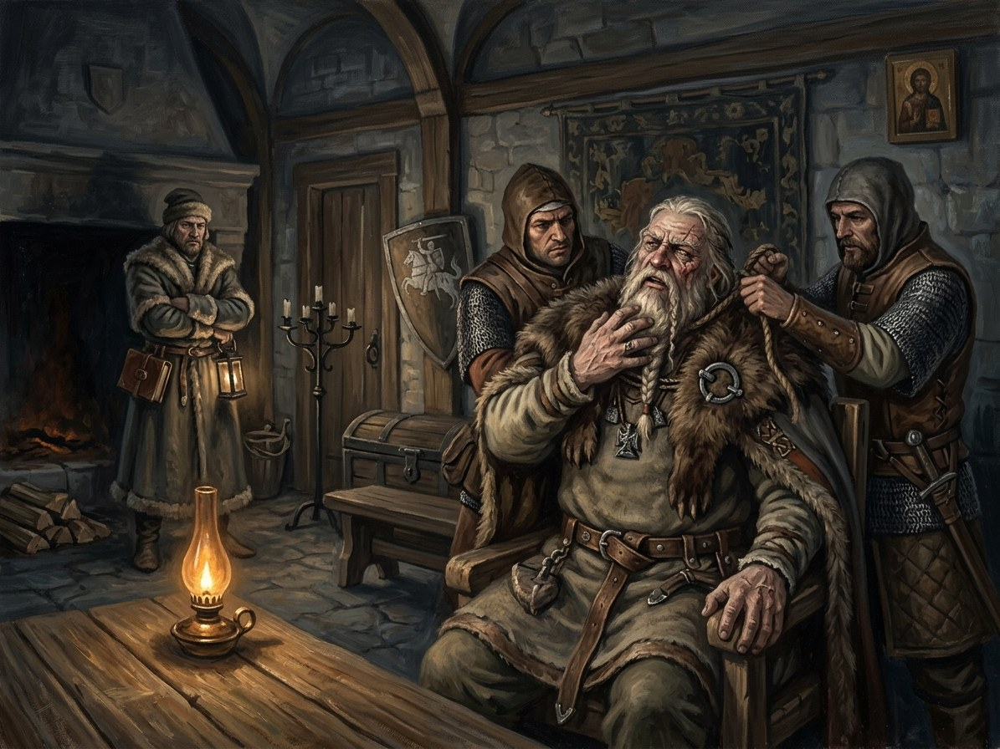

Kęstutis strangled at Krėva¶
What the chronicles say [Historical record]¶
Kęstutis was found dead at Krėva on 15 August 1382, the feast of the Assumption, about twelve days after the arrest of 3 August (some sources say „a week later“). Jogaila claimed that his uncle had hanged himself, which few believed. VLE says he was killed (strangled); the Lithuanian Wikipedia has him strangled on the orders of Julijona or Skirgaila, the body burned in Vilnius; the Order’s chronicler Wigand of Marburg is the main near-contemporary. Whether he died „naturally or was murdered“ is stated as debated in the English Wikipedia; most historians accept murder. The body was cremated with pagan rites in Vilnius, according to tradition. Skirgaila found the body.
Kęstutis strangled at Krėva

Kęstutis strangled at Krėva · event¶
Tipas |
įvykis |
Metai |
1382-08-15 |
Status |
Istoriniai duomenys |
Knyga |
|
Skyriai |
9 |
Pastaba |
Kęstutis is strangled in Krėva dungeon on 15 August 1382; breaks Pact clause 2. |
Where: Krėva (on the map)
What really happened [The saga’s invention]¶
Henė’s Breath of the Void muffled the tower so that no struggle was heard, and a shard of Velnias strangled the duke while the guards slept in unnatural stupor. Four Rus‘ mercenaries, paid in Riga silver, strangle him with the golden chain whose clasp bears the Riga mark of two crossed keys under a cross. Kęstutis, who took the beggar’s coin knowing, says: Gabija will not shine on your masters today; the cowards are Skirgaila and Jogaila. Birutė appears as an apparition leading his soul. The wolves of the Dykra howl. It is the kin-murder that breaks clause 2 of the Silent Pact: no Gediminid sheds Gediminid blood. The gods‘ protection lapses and the Shadow-Seller collects.
Consequences¶
Caused by the arrest. It breaks clause 2 of the Silent Pact and leads to Perkūnas claiming Vytautas and to the escape from Krėva. It also sets Skirgaila and Jogaila on the road that ends in the 1385 Union signed above the cell, and Žygimantas in the cell in 1438.
Dramatisation¶
Book I ch. 8 „Krėvos Požemiai“ (Kęstutis and Vytautas, talking through the stones; about ten to fourteen August), ch. 9 „Paskutinė Giesmė“ (Kęstutis, then Vytautas; the night of 14–15 August; Žolinė eve), ch. 10 „Šaltas Rytas“ (Vytautas; the morning of 15 August). Echoes: ch. 28b (Vytautas in the cell, 1385), Book I ch. 30 (Skirgaila), Book V ch. 19 (Žygimantas).
Ryšiai
Breaks: Tylioji Sutartis (Silent Pact) — Clause 2: Gediminid blood.
Caused by: Kęstutis & Vytautas lured to Jogaila’s camp near Trakai and arrested
Causes: Perkūnas claims Vytautas · Vytautas escapes Krėva in the maid’s clothes
Location: Krėva
Participants: Kęstutis
Sąsajos¶
graph LR
ev_arrest["Kęstutis & Vytautas lured to Jogaila's camp near Trakai and arrested"]
ev_kestutis_death["Kęstutis strangled at Krėva"]
ev_kreva_escape["Vytautas escapes Krėva in the maid's clothes"]
ev_perkunas_mark["Perkūnas claims Vytautas"]
kestutis["Kęstutis"]
kreva["Krėva"]
silent_pact["Tylioji Sutartis (Silent Pact)"]
ev_kestutis_death -->|Location| kreva
ev_kestutis_death -->|Breaks| silent_pact
ev_kestutis_death -->|Causes| ev_perkunas_mark
ev_kestutis_death -->|Causes| ev_kreva_escape
ev_arrest -->|Causes| ev_kestutis_death
kestutis -->|Took part in| ev_kestutis_death
style ev_kestutis_death stroke-width:3px